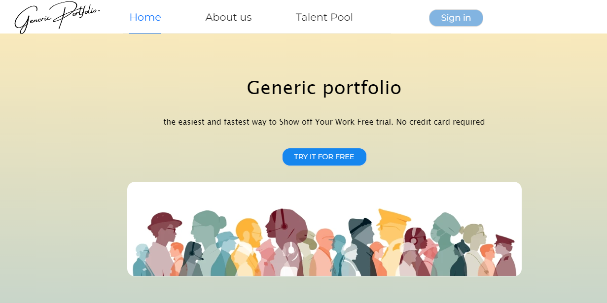
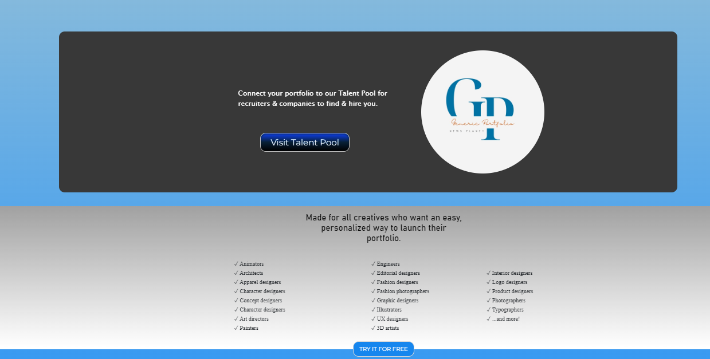
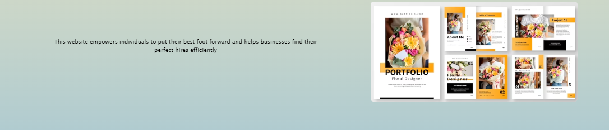

This portfolio generator project leverages some cutting edge technologies to provide a seamless experience for users looking to transform their CVs into dynamic web portfolios. The platform allows users to upload their CV in PDF format, and using advanced data extraction, it automatically processes the content to generate a beautifully designed web portfolio. This project not only simplifies portfolio creation but also ensures accurate data representation in a user-friendly format, making it a powerful tool for professionals seeking to showcase their skills and experience online.

The portfolio generator is a cutting-edge application that simplifies the process of creating web portfolios. Developed using Spring Boot, GPT-PDF, Angular, and Amazon S3, this project is designed to help users quickly turn their PDF CVs into dynamic, web-friendly portfolios. The system allows users to upload their CV in PDF format, after which CHAT-PDF automatically extracts key details such as work experience, education, skills, and projects. Using this data, the platform dynamically generates a beautifully structured and visually appealing portfolio in a responsive web format.

The use of Spring Boot for the backend ensures scalability and performance, while Angular powers the responsive and interactive front-end interface. Data storage and retrieval are managed efficiently using Amazon S3, providing secure and reliable file management. By automating the conversion process, the platform saves users the hassle of manually inputting their information, offering a fast, user-friendly, and professional solution for building portfolios..
The application’s architecture is based on microservices, which enabled me to break down the system into modular components responsible for specific tasks like CV parsing, data extraction, and portfolio generation. This approach not only made the system more scalable but also ensured that each service could be independently deployed and maintained without affecting the entire application.
To ensure smooth deployment and scalability, I containerized the entire system using Docker, allowing for consistent environments across development, testing, and production. Docker also made it easier to manage dependencies and rapidly scale the services, ensuring that the application remains responsive even under high user demand. This combination of technologies helped deliver a robust and flexible platform capable of handling complex tasks with ease.

This project highlights my skills in full-stack development, data processing with AI, and cloud storage integration, demonstrating my ability to deliver practical and elegant solutions to complex user needs. It's an ideal tool for anyone looking to showcase their professional achievements in a sleek and modern format, making it a great fit for developers, designers, or any professional seeking to stand out.